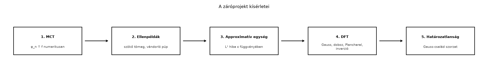
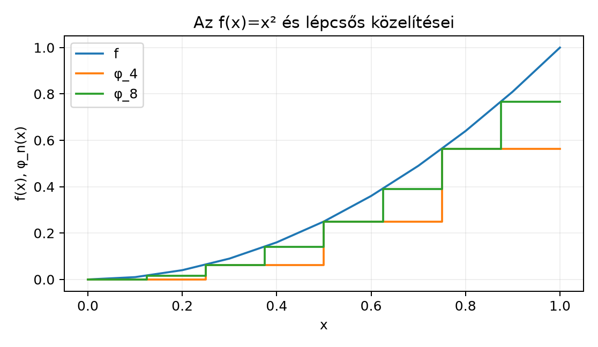
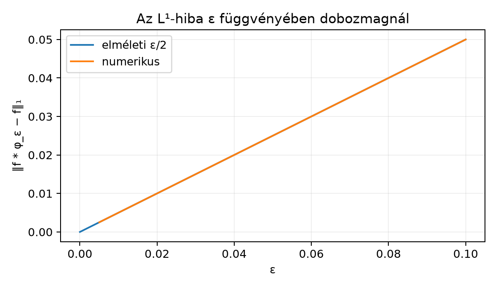

A könyv eddigi eredményeit elméleti bizonyításokkal igazoltuk. Ebben a záró projektben ugyanezeket a tételeket numerikus kísérletekkel próbáljuk ki. A cél nem az elmélet újabb bizonyítása, hanem az, hogy a tételek feltételeinek szerepét kézzelfoghatóvá tegyük: lássuk, hogy a monoton konvergencia tételnél a monotonitás, a dominált konvergencia tételnél az integrálható domináns, a Fourier-ellenőrzésnél pedig a csonkolás és a rácsméret hogyan befolyásolja az eredményt.
A kísérletek sorrendje követi a könyv ívét:

A diagram azt mutatja, hogy először az integrál-konvergencia tételeket, majd a konvolúciós approximációt, végül a Fourier-oldalt vizsgáljuk.
Numerikus kísérlet alatt olyan véges rácson végzett számítást értünk, amely egy elméleti tétel által előre jelzett viselkedést szemléltet. Minden kísérletben három hibaforrást kell számontartanunk:
A kódokban a Fourier-transzformációt a könyv konvenciójával közelítjük:
Ha a rács , akkor a DFT-vel kapott közelítés
Az
tényezőben a
eltolás egy
fázisfaktort ad az numpy.fft-hez képest; ezt a kódban az
ifftshift/fftshift párosítás kezeli.
Az Egyszerű függvények és a lépcsős közelítés alulról alfejezetben megkonstruáltuk a közelítést. Legyen most a intervallumon. Osszuk -t egyenlő, félnyílt intervallumra, és vegyük mindegyiken a bal végponti értéket:
Mivel szigorúan növekedő, a bal végponti érték valóban alsó közelítés: . Ahogy nő, a partíció finomodik, ezért pontonként. A monoton konvergencia tétel szerint
A lépcsős függvények integrálja zárt alakban is kiszámítható:
Ez az érték valóban -hoz tart.

A diagramon a lépcső ott van, ahol a bal végpont szerint mértük a függvényt. A negyedik iteráció 0,21875, a nyolcadik 0,27344, a valódi érték pedig .
# Python-illusztráció — nem bizonyítás
import numpy as np
import matplotlib.pyplot as plt
rng = np.random.default_rng(0)
def f(x):
return x**2
def step_lower(f, n, a=0.0, b=1.0):
"""n egyenlő rész; bal végponti, tehát növekvő f-re alsó közelítés."""
dx = (b - a) / n
edges = np.linspace(a, b, n + 1)
vals = f(edges[:-1])
return vals, dx
exact = 1 / 3
print("n numerikus integrál hiba")
for n in [4, 8, 16, 32]:
vals, dx = step_lower(f, n)
I_num = np.sum(vals) * dx
print(f"{n:2d} {I_num:.8f} {abs(I_num - exact):.8f}")
# Ábra a lépcsőkről
x_plot = np.linspace(0, 1, 500)
plt.plot(x_plot, f(x_plot), label="f(x)=x^2")
for n, ls in [(4, "-"), (8, "--")]:
vals, dx = step_lower(f, n)
xs, ys = [], []
for k, v in enumerate(vals):
xs.extend([k * dx, (k + 1) * dx])
ys.extend([v, v])
plt.plot(xs, ys, ls, label=f"$\\varphi_{{{n}}}$")
plt.legend()
plt.xlabel("x")
plt.ylabel("f(x)")
plt.show()n numerikus integrál hiba
4 0.21875000 0.11458333
8 0.27343750 0.05989583
16 0.30273438 0.03059896
32 0.31738281 0.01595052A táblázat jól mutatja a monoton alsó közelítést: az integrál alulról közelíti a -ot, és a hiba csökken. Ez a kísérlet nem bizonyítja az MCT-t, de a tétel által leírt irányt konkrét számokon jeleníti meg.
A határérték és az integrál felcserélése csak megfelelő feltételek mellett igaz. Két klasszikus ellenpéldát vizsgálunk.
Szökő tömeg. Legyen
Minden -hoz van olyan , hogy esetén , így . Az pontban mindig . Ezért pontonként a félegyenesen. Ugyanakkor
Tehát
A tömeg a határban az origó közelébe tömörül, de a pontonkénti határfüggvény számszerűen nulla. Ez a jelenség a Dirac-delta approximatív értelmezésének előfutára.
Vándorló púp. Legyen
Ekkor is pontonként, mert egy adott -hez elég nagy -re az intervallum már jobbra van tőle. Viszont
Itt a tömeg nem sűrűsödik, hanem elvándorol a -be. A dominált konvergencia tétel azért nem alkalmazható, mert nincs olyan integrálható , amelyre teljesülne minden -re; ha ugyanis ilyen létezne, akkor végtelent adna.
# Python-illusztráció — nem bizonyítás
import numpy as np
rng = np.random.default_rng(0)
def escaping_mass(n, x):
return n * ((x > 0) & (x <= 1/n)).astype(float)
def moving_bump(n, x):
return ((x >= n) & (x < n+1)).astype(float)
# Szökő tömeg integrálja
for n in [2, 5, 10]:
x = np.linspace(0, 1, 500001)
y = escaping_mass(n, x)
dx = x[1] - x[0]
I = np.sum(y) * dx
print(f"szökő tömeg, n={n:2d}: integrál = {I:.6f}")
# Vándorló púp integrálja
for n in [1, 3, 5]:
x = np.linspace(0, 30, 3000001)
y = moving_bump(n, x)
dx = x[1] - x[0]
I = np.sum(y) * dx
print(f"vándorló púp, n={n}: integrál = {I:.6f}")szökő tömeg, n= 2: integrál = 1.000000
szökő tömeg, n= 5: integrál = 1.000000
szökő tömeg, n=10: integrál = 1.000000
vándorló púp, n=1: integrál = 1.000000
vándorló púp, n=3: integrál = 1.000000
vándorló púp, n=5: integrál = 1.000000A numerikus értékek nem változnak, miközben a pontonkénti határ nulla. Ez világosan mutatja: az integrál határértéke nem mindig egyenlő a határérték integráljával.
A Approximatív egységek: a Dirac-delta mint határérték alfejezetben láttuk, hogy ha és approximatív egység, akkor
Válasszuk most a legegyszerűbb dobozmagot:
Legyen . A konvolúciót közvetlenül ki tudjuk számolni. Mivel és a -re koncentrálódik, az éles ugrásai és környékén lineáris átmenetté simulnak. Pontosabban esetén
Az eltérést integrálva:
A hiba tehát lineárisan tart nullához.

A diagramon a numerikus pontok az elméleti egyenesre esnek. A kódban a diszkrét konvolúciót és a Riemann-összeget használjuk.
# Python-illusztráció — nem bizonyítás
import numpy as np
import matplotlib.pyplot as plt
rng = np.random.default_rng(0)
def box_kernel_conv(f, x, eps):
dx = x[1] - x[0]
k = int(eps / dx)
kernel = np.ones(2*k + 1) / (2*eps) # diszkrét dobozmag
conv = np.convolve(f, kernel, mode='same') * dx
return conv
x = np.linspace(-1.0, 2.0, 300001)
dx = x[1] - x[0]
f = ((x >= 0) & (x <= 1)).astype(float)
print("eps numerikus L¹ hiba elméleti ε/2")
for eps in [0.005, 0.01, 0.02, 0.05, 0.1]:
conv = box_kernel_conv(f, x, eps)
L1_err = np.sum(np.abs(f - conv)) * dx
print(f"{eps:5.3f} {L1_err:.6f} {0.5*eps:.6f}")
# Egy simított f ábrája a legnagyobb ε-ra
conv = box_kernel_conv(f, x, 0.1)
plt.plot(x, f, label="$f = \\mathbf 1_{[0,1]}$")
plt.plot(x, conv, label="$f * \\varphi_{0.1}$")
plt.legend()
plt.xlabel("x")
plt.show()eps numerikus L¹ hiba elméleti ε/2
0.005 0.002501 0.002500
0.010 0.005001 0.005000
0.020 0.010001 0.010000
0.050 0.025001 0.025000
0.100 0.050001 0.050000A numerikus hiba közel az elméleti érték; a kis eltérést a diszkretizáció okozza, hiszen a dobozmag szélei nem mindig esnek pontosan rácspontra.
Most a folytonos Fourier-transzformációt próbáljuk ki DFT-vel. Két függvényt vizsgálunk.
A DFT-ről már tudjuk a A diszkrét
Fourier-transzformáció és az FFT alfejezetből, hogy az
numpy.fft normalizálása eltér a folytonos konvenciótól. A
kód a fentebb leírt
összefüggést használja. A frekvenciarács lépése az
fftfreq-ből adódik:
.
A Plancherel-ellenőrzéshez a két oldal diszkrét közelítését hasonlítjuk össze:
A diszkrét Parseval-azonosság miatt a két összegnek a kerekítési hibától eltekintve egyeznie kell.
# Python-illusztráció — nem bizonyítás
import numpy as np
rng = np.random.default_rng(0)
def fft_approx(f, L):
N = len(f)
dx = L / N
x = (np.arange(N) - N/2) * dx
xi = np.fft.fftshift(np.fft.fftfreq(N, d=dx))
# A mintát a 0 köré rendezve adjuk az fft-nek
F = dx * np.fft.fftshift(np.fft.fft(np.fft.ifftshift(f)))
return xi, F
N = 4096
L = 20.0
dx = L / N
x = (np.arange(N) - N/2) * dx
# Előkészítés
gauss = np.exp(-np.pi * x**2)
box = (np.abs(x) <= 0.5).astype(float)
for name, f, theory in [
("Gauss", gauss, np.exp(-np.pi * np.fft.fftshift(np.fft.fftfreq(N, d=dx))**2)),
("Doboz", box, None)
]:
xi, F = fft_approx(f, L)
dxi = 1 / (N * dx)
norm_time = np.sum(np.abs(f)**2) * dx
norm_freq = np.sum(np.abs(F)**2) * dxi
plancherel_err = abs(norm_time - norm_freq)
f_back = np.fft.fftshift(np.fft.ifft(np.fft.ifftshift(F))) / dx
inv_err = np.max(np.abs(f_back - f))
print(f"{name}: Plancherel eltérés = {plancherel_err:.2e}")
print(f"{name}: inverzió maximális hibája = {inv_err:.2e}")
print(f"{name}: időoldali L²-norma = {np.sqrt(norm_time):.6f}")Gauss: Plancherel eltérés = 3.11e-15
Gauss: inverzió maximális hibája = 2.22e-15
Gauss: időoldali L²-norma = 0.707107
Doboz: Plancherel eltérés = 1.94e-15
Doboz: inverzió maximális hibája = 2.89e-15
Doboz: időoldali L²-norma = 1.000000A kódban a nagyságrendű eltérések a lebegőpontos kerekítésből adódnak, nem elméleti hibából. A Gauss-függvény időoldali -normája , ami pontosan a várt érték.
A dobozfüggvény esetén a Fourier-transzformált közelítésekor a rács véges volta miatt csonkolási hibát is látnánk, ha az elméleti sinc-függvénnyel hasonlítanánk össze. A doboz éles szélei miatt a transzformált lassan cseng le, ezért a véges rácsú DFT csak a frekvenciatengely középső részén pontos. Az inverz DFT azonban így is visszaadja a diszkrét mintákat, mert a DFT inverze algebrailag pontos.
A A határozatlansági elv alfejezetben láttuk, hogy minden nemnulla Schwartz-függvényre
Gauss-függvényre egyenlőség áll fenn. Tekintsük a
családot. A paraméter az időoldali szélességet szabályozza: minél nagyobb , annál szélesebb a függvény. A Fourier-transzformáltja
A normált szorzat ezért minden -ra az elméleti alsó korlátot adja:
A numerikus kísérletben különböző értékekre kiszámítjuk a szorzatot a DFT-s Fourier-transzformálttal.
# Python-illusztráció — nem bizonyítás
import numpy as np
rng = np.random.default_rng(0)
def uncertainty_product(sigma):
N = 8192
L = 20.0 * max(sigma, 1.0) # a lecsengéshez igazított ablak
dx = L / N
x = (np.arange(N) - N/2) * dx
f = np.exp(-np.pi * (x / sigma)**2)
xi = np.fft.fftshift(np.fft.fftfreq(N, d=dx))
F = dx * np.fft.fftshift(np.fft.fft(np.fft.ifftshift(f)))
dxi = 1 / (N * dx)
norm_f2 = np.sum(np.abs(f)**2) * dx
norm_xf2 = np.sum(np.abs(x * f)**2) * dx
norm_xiF2 = np.sum(np.abs(xi * F)**2) * dxi
return np.sqrt(norm_xf2 * norm_xiF2) / norm_f2
alsó = 1 / (4 * np.pi)
print("sigma numerikus szorzat elméleti alsó korlát hiba")
for s in [0.6, 0.8, 1.0, 1.2, 1.5]:
p = uncertainty_product(s)
print(f"{s:4.1f} {p:.12f} {alsó:.12f} {p - alsó:.2e}")sigma numerikus szorzat elméleti alsó korlát hiba
0.6 0.0795774715 0.0795774715 1.45e-09
0.8 0.0795774715 0.0795774715 1.20e-09
1.0 0.0795774715 0.0795774715 9.87e-10
1.2 0.0795774715 0.0795774715 1.11e-09
1.5 0.0795774715 0.0795774715 1.39e-09A táblázat a legfontosabb tanulságot mutatja: a numerikus szorzat -tól függetlenül gyakorlatilag , ahogyan az elmélet állítja. A hiba a diszkretizációból és a véges rácson való csonkolásból származik.
fftshift nélkül ábrázoljuk a DFT-t, a negatív frekvenciák
helytelen helyre kerülnek. Ugyanígy, ha a bemenő mintát
ifftshift nélkül adjuk meg, egy fázisfaktor jelenik meg a
folytonos konvencióhoz képest.1. feladat (fogalmi ellenőrzés). A 4. kísérlet Plancherel-ellenőrzésében sorolj fel három numerikus hibaforrást, és mondd meg, melyik okozhatja azt, hogy a dobozfüggvény transzformáltja a magas frekvenciákon jobban eltér az elméleti sinc-függvénytől, mint a Gauss-függvény esetén.
2. feladat (számolás). A 3. kísérletben használt dobozmagra és -re vezesd le a konvolúciós képletet, és számítsd ki a hibát.
3. feladat (bizonyítás). Legyen . A Gauss-integrálok ismeretében mutasd meg, hogy
és ebből vezesd le, hogy a határozatlansági szorzat .
4. feladat (ellenpélda-keresés). Adj olyan függvényt, amelyre a 4. kísérletbeli DFT-Plancherel-ellenőrzés csonkolás miatt látványosan rossz lesz, ha a ablak túl kicsi. Javasolj javítást.
1. megoldás. A három hibaforrás: (i) diszkretizációs hiba, mert az integrált véges összeggel helyettesítjük; (ii) csonkolási hiba, mert helyett véges intervallumot használunk; (iii) kerekítési hiba, mert a számítás lebegőpontos. A dobozfüggvény Fourier-transzformáltja , amely csak nagyságrendben cseng le, tehát nem integrálható abszolút. Ezért a véges rács és az éles ugrás miatt a magas frekvenciás tartományban a DFT-közelítés gyengébb, mint a Gauss-függvénynél, amely exponenciálisan lecseng.
2. megoldás. A konvolúció
Mivel pontosan akkor, ha , azaz , az integrál az intervallum hossza osztva -nal. A metszet hossza a megadott esetekben adja a képletet. A hibaintegrál pedig a korábban számolt
3. megoldás. A Gauss-integrálból . Ezzel
A paraméteres deriválásból , így -tel
A Fourier-transzformált , ezért ugyanezzel a számolással az szereposztással
ahol az utolsó lépésben -t használtuk. Így a szorzat
4. megoldás. Jó ellenpélda a lassan lecsengő , mert például -nél is értéket vesz fel, tehát a ablak szélén nem elhanyagolható. A DFT periódusként összeilleszti a függvényt, ami ugrást és ezáltal nagyfrekvenciás műhibát okoz. Javítás: növeljük az ablakot úgy, hogy a szélén a függvény már alatt legyen, vagy alkalmazzunk sima ablakozást, illetve növeljük a mintavételi sűrűséget.
A záróprojekt öt kísérlete numerikusan szemléltette a könyv fő tételeit. Az első kísérletben a lépcsős közelítés integrálja alulról tartott az integráljához. A második kísérlet a szökő tömeg és a vándorló púp példáján mutatta, hogy a pontonkénti határ és az integrál felcserélése nem automatikus: , de . A harmadik kísérlet a dobozmag approximatív egységre igazolta, hogy az -hiba -ként tart nullához. A negyedik kísérletben a DFT-vel számolt Fourier-transzformált, az inverz és a Plancherel-azonosság a Gauss- és dobozfüggvényre a várt értéket adta. Az ötödik kísérlet a Gauss-családon a határozatlansági szorzatot -nek találta.
Továbbvitt eredmény. A kísérletek tanulsága — különösen a feltételek szerepe, a diszkretizáció, a csonkolás és a DFT-konvenció kezelése — közvetlenül beépül a Összefoglalás: tételgyűjtemény, fogalomtérkép, továbbtanulás alfejezetbe, ahol a könyv fő eredményeit egységes térképen foglaljuk össze.
A DFT-levezetés a könyv A diszkrét
Fourier-transzformáció és az FFT alfejezetén alapul. A NumPy
FFT-rutinok pontos hívási konvenciója verziófüggő; a
numpy.fft dokumentációt az adott környezethez ellenőrizni
kell. A jelen alfejezet nem támaszkodik webes forrásra, és nem állítja,
hogy az említett URL-eket olvasta.